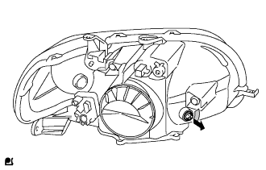

ヘッドランプASSY 分解 |
| 1. フロント ターンシグナルランプ ソケット取りはずし |
|
フロントターンシグナルランプバルブをフロントターンシグナルランプソケットと一体で取りはずす。
| 2. フロント ターンシグナルランプ バルブ取りはずし |
フロントターンシグナルランプバルブをフロントターンシグナルランプソケットから取りはずす。
| 3. クリアランスランプ ソケット取りはずし |
|  |
クリアランスランプバルブをクリアランスランプソケットと一体で取りはずす。
| 4. クリアランスランプ バルブ取りはずし |
クリアランスランプバルブをクリアランスランプソケットから取りはずす。
| 5. ヘッドランプ ソケット カバー取りはずし（ディスチャージヘッドランプ） |
コネクターを切り離し、ヘッドランプソケットカバーを取りはずす。
| 6. ヘッドランプバック カバー NO.1取りはずし（ディスチャージヘッドランプ） |
 |
ヘッドランプバックカバーNO.1を図の矢印方向に回して取りはずす。
| 7. ディスチャージヘッドランプ バルブ取りはずし（ディスチャージヘッドランプ） |
 |
ライトコントロールコンピュータのソケット部を図の矢印方向に回して切り離す。
 |
セットスプリングを図のように押して、ディスチャージヘッドランプバルブを取りはずす。
| 8. ヘッドランプ ライト コントロール コンピュータ ASSY LH取りはずし（ディスチャージヘッドランプ） |
 |
スクリュー3本をはずし、リフレクタASSYを取りはずす。
 |
スクリュー4本を取りはずす。
コネクターを切り離す。
エーミングスクリューの左右調整用を左回転させ、ライトコントロールコンピュータのソケットが通るすき間を作りヘッドランプライトコントロールコンピュータASSY LHを取りはずす。
 |
| 9. ヘッドランプ ガスケット取りはずし（ディスチャージヘッドランプ） |
ヘッドランプガスケットを取りはずす。
| 10. ヘッドランプ ソケット カバー取りはずし（ディスチャージヘッドランプ） |
ヘッドランプソケットカバーを取りはずす。
| 11. ヘッドランプ ソケット カバー取りはずし（ハロゲンヘッドランプ） |
ヘッドランプソケットカバーを取りはずす。
| 12. ヘッドランプ NO.1 バルブ取りはずし（ハロゲンヘッドランプ） |
 |
セットスプリングを図のように押して、ヘッドランプバルブを取りはずす。
| 13. ヘッドランプレベリング モータ LH取りはずし |
エーミングスクリューを回転させ、リフレクタとのネジ部をはずす。
ヘッドランプレべリングモータを矢印の方向に回転させ、ヘッドランプレべリングモータLHを取りはずす。
Oリングを取りはずす。